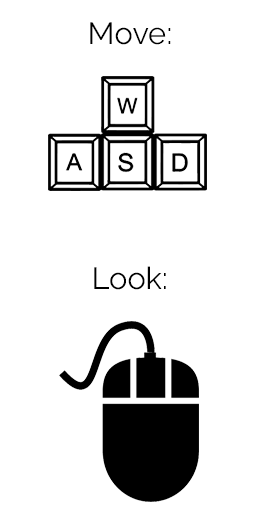

Source for Planet Specs: http://www.scalesolarsystem.66ghz.com/?i=1
- Sun Size Scale: 1 Unit = 2,000 km (Sun drawn smaller to make planets more visible)
- Planet / Moon Size Scale: 1 Unit = 100 km
- Planet Distance Scale: 1 Unit = 90,000 km
- Moon Distance Scale From Earth: 1 Unit = 6,300,000 km
- Planet Orbit Speed Scale: 1 Unit = 10,000,000 mph
- Moon Orbit Speed Scale: 1 Unit = 1,000,000,000,000 mph